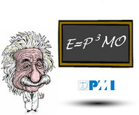

|
NEWS
Indagine del Project Management Institute sullo stato dei Project Management Office nelle aziende italiane
L'attività di ricerca si concluderà il 31 Luglio 2007 ed il 16 Novembre 2007 saranno presentati in un evento i risultati.
di Nicolò Occhipinti
Il Project Management Institute - Northern Italy Chapter (www.pmi-nic.org) sta effettuando un’indagine conoscitiva nazionale sullo stato dei Project Management Office (PMO) in Italia (i PMO sono quelle unità organizzative che gestiscono le iniziative progettuali poste sotto il proprio raggio d’azione).
La ricerca è rivolta a tutte le aziende italiane che hanno già realizzato un PMO, o che hanno incominciato a sentirne la necessità o che hanno già intrapreso il cammino per la sua costituzione.
Per partecipare è sufficiente compilare il questionario che trovate all’indirizzo
www.pmi-nic.org/iniziative.asp.
Per scaricare la brochure dell'Osservatorio PMO,
clicca qui.
5-5-2007
LINK ALLA NEWS:
www.eccellere.com/rubriche/news/news.asp?id=85
I testi rimangono proprietà intellettuale e artistica dei rispettivi
autori. 2010 -

I contenuti di Eccellere
sono concessi sotto la
Licenza Creative Commons Attribuzione - Non commerciale 3.0 Unported. Ulteriori informazioni sono disponibili alla pagina
Note legali (www.eccellere.com/notelegali.htm). |

 Stampa l'articolo
Stampa l'articolo